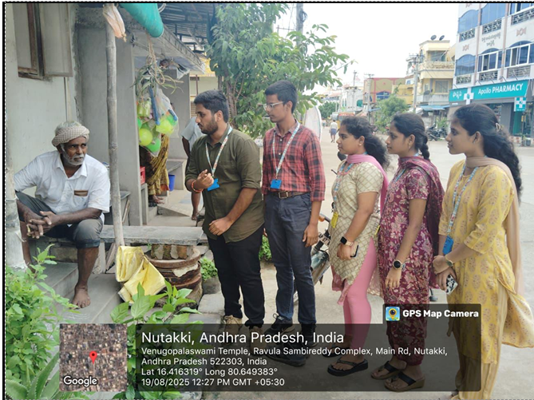
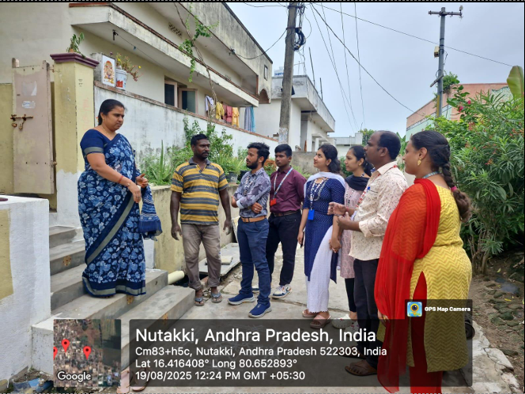

National Service Scheme
Launched in 1969, NSS at KLU engages students in nation-building through volunteer social services. The motto: community interests first. Students develop healthy contacts between campus and community while stimulating socio-economic progress.
🤝
Social Service
Regular volunteer activities in nearby villages including health camps, cleanliness drives, and literacy programs.
🌱
Community Building
Tree plantation drives, environmental awareness campaigns, and community development projects.
🎓
Education Awareness
Eradicating child labour and creating awareness about the importance of education in rural areas.
🏥
Health Camps
Health check-up campaigns, blood donation drives, and first aid training for students and community members.
Activities Conducted by NSS Unit

